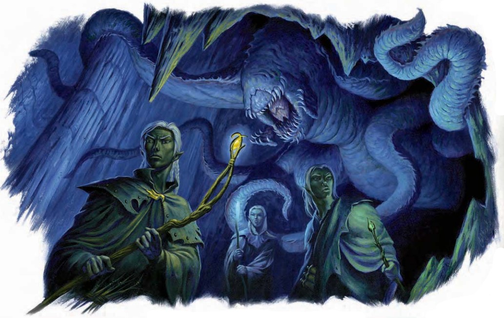

一只卵形身躯的庞大生物从天顶上落下。它用六条长触手代替腿来移动，一张满是锯齿状锋利牙齿的大口从它的双肩之间伸出。
| 资料栏位 | 狩魔伪怪（Balhannoth） 大型异怪 |
|---|---|
| 生命骰 | 14d8+84（147HP） |
| 先攻 | +7 |
| 速度 | 50尺 (10格)； 攀爬 50尺 |
| 防御等级 | 21 (-1体型，+3 敏捷，+9天生)，接触12，措手不及18 |
| 基本攻击/擒抱 | +10/ +23 |
| 攻击 | 近战 挥击+18(2D6+9/19-20)或啮咬+13（1D8+4） |
| 全力攻击 | 近战 2挥击+18(2D6+9/19-20)和啮咬+13（1D8+4） |
| 面宽/触及 | 10尺/ 10尺（触手15尺） |
| 特殊攻击 | 反魔擒抱，魔法打击 |
| 特殊能力 | 目盲，咒文灵视，次元锁，伤害减免15/魔法；免疫：凝视攻击，幻影，视觉效果；SR:18，伪装 |
| 豁免 | 强韧+10，反射+9，意志+12 |
| 属性 | 力量28，敏捷17，体质23，智力3，感知12，魅力8 |
| 技能 | 攀爬 +17，躲藏 +16，跳跃 +17，聆听 +6，潜行 +13 |
| 专长 | 精通重击（挥击），精通先攻，钢铁意志，闪电反射，猛力攻击 |
| 环境 | 见后文 |
| 组织 | 见后文 |
| 挑战等级 | 10 |
| 宝物 | 无 |
| 阵营 | 通常混乱中立 |
| 进化 | 15-20HD (大型)；21-30HD（超大型） |
| 等级调整 | ― |
作为盘踞于地底国度的恐怖异怪，狩魔伪怪通过追踪魔法能量进行狩猎。它们可以"看到"魔法，但实际上却是瞎的。在它们有力的抓握下没有任何魔法效果能够幸存，这使得这些掠食者们对于依赖法术或魔法物品的冒险者而言尤为致命。
战斗狩魔伪怪通过伏击，而非追击来狩猎。因为当短程冲刺时，狩魔伪怪因过于庞大而不能在地下狭窄扭曲的通道中挖出追击的道路。狩魔伪怪最常用的战术是在较大的洞穴中一动不动地静静等待，藏身于天然的石墙间，或以其有力而善于抓握的肢体攀附在天顶上。当它通过咒文灵视探测到潜在的猎物时，它会冲向带有最多或最强力魔法效果的生物。狩魔伪怪乐于利用猛力攻击打翻对它最具威胁的对手。
咒文灵视（Dweomersight）(Su)：狩魔伪怪可以感知并定位距其120尺内的魔法灵光，并获知灵光的强度与每一个灵光的学派。它可以精确定位任何带有持续性魔法效果，携带魔法物品，或使用魔法的生物。它也可以注意到在区域性魔法效果（包括它自身的次元锁光环）的区域内的一切物体。除此之外的效果类似盲感。
次元锁（Su）：如同次元锁法术，以狩魔伪怪为中心20尺半径，施法者等级10。此效果随狩魔伪怪移动而移动。
紧勒（Ex）：狩魔伪怪一旦通过擒抱检定便可在挥击伤害外额外造成1d8的伤害。
精通攫抓 (Ex)：使用这项能力之前，狩魔伪怪必须通过它的挥击攻击命中一个大型或更小体型的生物。然后它可以通过一个即时动作尝试擒抱对手，该动作不会引发借机攻击。如果它在擒抱检定中成功，它便抓住对手并且可以进行紧勒。
反魔之握（Su）：当狩魔伪怪擒抱住对手时，对手装备的所有魔法物品的魔法特性将被压制。此外，被狩魔伪怪擒抱住的生物不能施法，使用类法术能力或超自然能力。狩魔伪怪穿戴或持有的魔法物品将自动被压制。
伪装（Ex）：狩魔伪怪的皮肤会随周围环境改变而变色。因此，狩魔伪怪可以在任何自然地形下使用躲藏技能。
技能：因其伪装能力，狩魔伪怪在躲藏检定上有+15种族加值。它在攀爬检定上具有+8种族加值并总是可以取10，即使是在匆忙或是被威胁的情况之下。
在知识（地下城）上有级数的人物可以更多地了解狩魔伪怪。当人物成功通过技能检定时，以下知识将被揭示，其中包括了更低DC的信息。
| 知识（地下城） | 结果 |
|---|---|
| DC 20 | 这种奇异的生物是狩魔伪怪，一种土生土长于地底的异怪。这个结果揭示了其所有异怪特性。 |
| DC 25 | 狩魔伪怪特别善于通过感知魔法狩猎。如果你没有携带着魔法物品，也不是持续性魔法效果的目标，除非你离它很近，你对它而言是视而不见的。 |
| DC 30 | 狩魔伪怪是食肉动物，但它也能吸收魔法能量。以魔法物品为食并不会伤害它们。它们在自己的巢穴中贮藏魔法物品，就像在食品贮藏室中储存肉类一样。 |
| DC 35 | 狩魔伪怪会压制它们接触到的魔法物品上的，或它们擒抱住的生物身上的任何魔法效果。狩魔伪怪的身边环绕着次元锁效果，这将阻止魔法性质的逃脱并使它能看清它的周围。 |
一个庞然大物从天花板上掉落下来，它的椭圆形身体用六根长触手代替双腿移动，肩部之间突出的血盆大口满是参差不齐、撕裂猎物的尖牙。
| 资料栏位 | 狩魔伪怪 (Balhannoth) 通常混乱中立，大型异怪 |
|---|---|
| 先攻权 | +7；感官：盲感，魔法感应 120 英尺；聆听 +6 |
| 语言 | 无 |
| 灵光 | 次元锚 |
| 防御等级 | 21，接触 12，措手不及 18（--1 体型，+3 敏捷，+9 天生） |
| 生命骰 | 147（14 HD）；DR15/魔法 |
| 免疫 | 凝视攻击、幻术、视觉效果 |
| 法术抗力 | 18 |
| 豁免 | 强韧 +10，反射 +9，意志 +12 |
| 速度 | 50 英尺（10 格），攀爬 50 英尺 |
| 近战 | 2 次挥击 +18（2d6+9/19--20）和啮咬 +13（1d8+4） |
| 占据/触及 | 10 英尺；触及10 英尺（触手可达 15 英尺） |
| 基本攻击/擒抱 | +10；擒抱 +23 |
| 攻击选项 | 猛力攻击、绞杀 (1d8 点额外伤害)、精通攫抓、魔法打击 |
| 特殊动作 | 反魔擒抱 |
| 属性 | 力量28，敏捷17，体质23，智力3，感知12，魅力8 |
| 特性SQ | 伪装 |
| 专长 | 精通重击（挥击）、精通先攻、钢铁意志、闪电反射、猛力攻击 |
| 技能 | 攀爬 +17，躲藏 +16，跳跃 +17，聆听 +6，潜行 +13 |
| 进化 | 15--20 HD（大型）；21--30 HD（超大型） |
魔法感应 (Dweomersight) (Su)：狩魔伪怪能感知120英尺内所有魔法灵光的位置与强度，并了解其所属学派。它可以精确定位带有魔法装备、被施加法术效果或正在使用魔法的生物的位置，还可以察觉位于魔法效果范围内的任何事物（包括自身的次元锚灵光）。此能力类似盲感。
次元锚 (Dimensional Lock) (Su)：类似于法术"次元锚"，以狩魔伪怪为中心的20英尺半径范围内生效（施法等级 10）。此效果随狩魔伪怪移动。
绞杀 (Constrict) (Ex)：当成功擒抱时，狩魔伪怪可以额外造成 1d8 点伤害，此外还有挥击攻击的伤害。
精通攫抓 (Improved Grab) (Ex)：狩魔伪怪在用挥击攻击击中最大为大型的敌人后，可作为自由动作发起擒抱，而不会引发借机攻击。如果擒抱成功，它将抓住目标并造成绞杀伤害。
反魔擒抱 (Antimagic Grapple) (Su)：在擒抱中，目标的魔法物品的所有魔法属性均被压制，同时被擒抱的生物无法施放法术或使用类法术或超自然能力。狩魔伪怪还可以通过持有或穿戴物品自动压制它们的魔法效果。
伪装 (Camouflage) (Ex)：狩魔伪怪的皮肤颜色会根据周围环境发生变化，因此它可以在任何自然地形中使用隐匿技能。
技能：由于其伪装能力，狩魔伪怪在躲藏检定上有+15种族加值。它在攀爬检定上有+8的种族加值，并且可以选择在攀爬检定上取10，即使是分心或受到威胁时。
狩魔伪怪是通过追踪魔法能量来狩猎的可怕地下异怪。它们能够"看到"魔法，但在其他方面是盲目的。这些掠食者的强大之处在于它们的擒抱中魔法无法生效，因此对依赖法术或魔法物品的敌人尤为致命。
策略与战术狩魔伪怪主要通过伏击进行狩猎，而非跟踪猎物。尽管它短距离冲刺时速度极快，但由于身体笨重，它难以在地下狭窄的曲折通道中追击目标。狩魔伪怪最常见的战术是静静地待在宽敞的洞穴中，伪装成岩壁的一部分或用强大的触肢挂在天花板上。当它通过魔法感应发现潜在猎物时，会迅速冲向带有最多或最强魔法效果的生物，并优先使用猛力攻击打击最具威胁的对手。
范例遭遇狩魔伪怪通常独自行动，但在魔法丰富的地区，它们可能会聚集成多达六只的群体。
护卫 (EL 12-14)：一些强大的生物会雇佣狩魔伪怪作为守卫，提供食物并偶尔给予它们可供汲取能量的魔法物品。
EL 14：一对夺心魔使用魅惑魔法控制了三只狩魔伪怪，作为它们穿越地下时的护卫。这些夺心魔让狩魔伪怪攻击沿途遇到的其他生物，并从魔法物品的灵光中汲取能量。当狩魔伪怪厌倦这些物品时，夺心魔会将物品收走。一旦找到靠近人类聚居地的合适巢穴，夺心魔计划将狩魔伪怪安置在巢穴周围防御敌人。
生态狩魔伪怪进化以适应魔法充盈的地下环境。它们与魔法共鸣，并利用魔法的存在来探测猎物。
饮食习性狩魔伪怪以肉类和魔法灵光为食。微弱魔法灵光：足以维持一天。中等魔法灵光：可供食用一周。强效魔法灵光：足够维持一个月。学者推测，压倒性的魔法灵光可能让狩魔伪怪终生受用。尽管狩魔伪怪汲取魔法能量，但不会对魔法物品造成永久性损害。随着时间推移，它会对当前魔法灵光的"味道"感到厌倦，并寻找新的魔法源。
狩猎习性狩魔伪怪无法分辨魔法物品与持续法术效果，因此会攻击任何它能通过魔法感应检测到的目标。对没有魔法的生物，它不会表现出兴趣，除非这些生物进入了其次元锚灵光范围，使它们"可见"。
巢穴与繁殖猎杀完成后，狩魔伪怪会将猎物带回巢穴，吞食其肉体，并将所有魔法物品分类处理。它通常会携带一件物品汲取能量，并将其他物品隐藏在隐秘或难以触及的地方（例如巨石下或洞穴天花板的裂缝中）。狩魔伪怪没有性别，任何个体都可以相互受孕。它们的繁殖不需要复杂仪式，只需触碰触肢即可使双方受孕。一年后，每只狩魔伪怪会产下一枚与啤酒桶大小相仿的卵。卵必须与魔法物品接触或处于魔法效果范围内才能孵化。通常，狩魔伪怪将卵存放在其食物储藏区，但在资源不足时会携带卵迁移至更适宜的地点。卵在一个月后孵化，幼体三年内成熟。
智力与语言尽管狩魔伪怪的智力足以学会基础语言，但极少有个体会说话。只有被圈养并训练为守卫的个体会理解主人的语言，以低沉嘶哑的声音发声，但语法和词汇都非常有限。
栖息地与特征环境：狩魔伪怪可生活于任何地下地形。
体型特征：通常肩高约9英尺，体重约4,000磅。
阵营倾向：狩魔伪怪是贪婪的捕食者，行为难以预测但并非天性邪恶。通常为混乱中立。
"今天又失去了一个采矿队。牧师们保持沉默，但士兵之间开始流传谣言。他们称其为'balhannoth'，意为'无魔之死'，并低声抱怨要拒绝巡逻。我可能得考虑实施鞭刑了。"――杜尔加矮人队长武尔弗尔
范例巢穴：狩魔伪怪洞穴这个宽广、天花板高耸的洞穴距离主要地下贸易路线不远。栖息于此的狩魔伪怪以牲畜、负重兽以及迷路的智慧生物为猎物。
1. 狩魔伪怪伏击点 (EL 11)：这个大型洞穴内布满了自然形成的粗大石柱，直达20英尺高的天花板。一只狩魔伪怪藏身于标记为"1"的区域的天花板上，静待毫无防备的旅行者经过其下方。
2. 破损的石桥 (EL 4)：一条狭窄的石桥延伸入黑暗之中，下方传来湍急流水的咆哮。这座狭窄的石桥已破损且不稳定。通过桥面需要成功通过一次平衡检定 (DC 20)以避免掉落。下方的急流湍急，流向4号区域。掉入水中的角色需要成功通过游泳检定 (DC 20)，否则会被冲入水下，每回合受到1d6点伤害，最后浮出水面进入4号区域。
3. 狩魔伪怪巢穴：此房间为狩魔伪怪的栖息地及猎物吞噬之处。地面上散落着几具部分被啃食的尸体，其中还藏有有用的物品：40金币、一颗价值55金币的宝石、一套犀牛革甲、一瓶延缓毒发药水。
4. 地下河流：这里是2号区域石桥下河流的延续，水流湍急且深。掉入水中的角色若未通过游泳检定 (DC 20)，将被水流冲向墙壁下方，受到3d6点伤害后才浮出水面。这一区域可以引导玩家进入冒险的下一阶段。
5. 地下贸易之路 (EL 11)：一条蜿蜒的小路延伸数英里，深入地下。如果玩家轻松应对狩魔伪怪，可以让三名黑暗狙击手和两名奥术护卫沿路巡逻，从后方袭击玩家队伍。
典型财宝由于其特殊的进食方式，狩魔伪怪比其他生物更可能携带魔法财宝。这些财宝通常存放于其巢穴中，其价值与CR 10生物相符，约为5,800金币。狩魔伪怪的金币数量为普通生物的一半，但魔法物品则是两倍。
狩魔伪怪在艾伯伦狩魔伪怪遍布凯博尔，但在希恩德瑞克地下洞穴深处尤为常见。它们经常与卓尔游牧部落接触，在某些部落中，"balhannoth"一词意指"高超而狡猾的猎手"。
狩魔伪怪在费伦狩魔伪怪主要分布在北暗区，尤其集中在安纳乌洛克的边界附近。这种奇特的分布使学者们推测，这些生物可能是耐瑟法师创造的，用以刺杀他们的对手。
狩魔伪怪的知识拥有地城知识技能的角色可以通过成功的检定了解更多关于狩魔伪怪的信息，具体如下：
| 知识（地城） | 结果 |
|---|---|
| DC 20 | 这是一种名为狩魔伪怪的奇异生物，是一种生活在地下的异怪。这条结果揭示了所有异怪特性。 |
| DC 25 | 狩魔伪怪特别擅长通过感知魔法来猎杀。如果你不携带魔法物品且没有持续法术效果加持，除非你非常靠近，否则它对你视而不见。 |
| DC 30 | 狩魔伪怪以肉体为食，同时也吸收魔法能量。它会储藏魔法物品，就像储存肉食一样。 |
| DC 35 | 狩魔伪怪能抑制其接触的魔法物品的能力，同时也能压制其擒抱目标的魔法效果。其周围的次元锚效果不仅阻止了魔法逃脱，也让它能够感知周围环境。 |